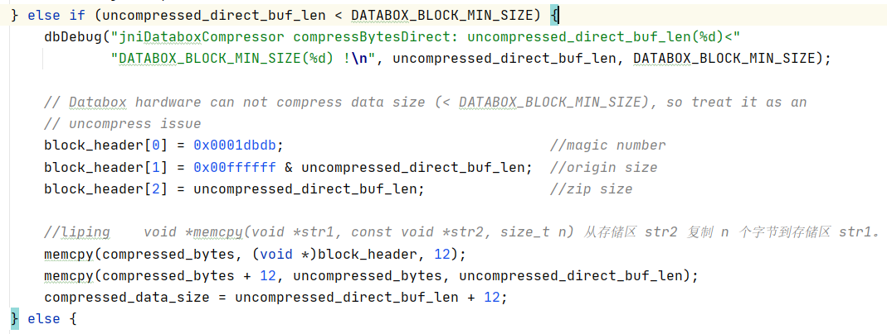

snappy | databox | ||
Codec | checkNativeCodeLoaded createDirectDecompressor | getMachineNodeName getNativeLoadedErrorMsg static块 属性: LOG nativeLoaded machineNodeName nativeLoadedErrorNum | 重点关注createOutputStream、createInputStream、createCompressor、createDecompressor四个的bufferSize为什么和snappy的不一样。 |
Compressor | isNativeCodeLoaded 属性: nativeSnappyLoaded | DataboxCompressor(int directBufferSize, boolean useInDataboxCodec) getNativeLoadedErrorNum isNativeLoaded 属性: DEFAULT_DIRECT_BUFFER_SIZE 和snappy的初始值不一样 encodeDirectBuf nativeLoaded nativeLoadedErrorNum | |
Decompressor | decompressDirect isNativeCodeLoaded 属性: nativeSnappyLoaded | DataboxDecompressor(int directBufferSize, boolean useInDataboxCodec) getNativeLoadedErrorNum isNativeLoaded 属性: DEFAULT_DIRECT_BUFFER_SIZE 和snappy的初始值不一样 decodeDirectBuf nativeLoaded nativeLoadedErrorNum | |
NativeCodeLoader | 实现区别较大,建议仔细看看。 | ||
DataboxConfigurationKeys 等价于 CommonConfigurationKeys | 两个类里面全是静态常量, 不过DataboxConfigurationKeys比CommonConfigurationKeys少了很多静态常量 |
可以画的图:
代码的层次结构图
java
jni
c
驱动
硬件(Verilog)
了解jni、了解写入硬件的语言
-----------------------------------------------------------------------------------------------
是将c的压缩算法转换为Verilog语言的?
题目要不要改成: 软硬件结合的大数据压缩算法的设计与实现?
超压是什么意思
想想除了节约CPU时间, 还有什么地方是硬件加速快的原因。可以问磊哥
硬件压缩的速度就是快于CPU跑软件代码?
还是因为CPU是有时间片的,不能一直持续压缩,要不断切换上下文?
找一下c源码哪里调了驱动或硬件,以及c源码到底干了啥。(重点看的是为啥数据头要12个字节,这12个字节是干啥用的? 一次性压缩的最大数据量是不是跟硬件寄存器的数量有关?)
c源码中的common.c文件是软件压缩算法吗? 比如pack_rle函数之类的。可以问问磊哥软件压缩方式在databox里是如何实现的。
打开虚拟机 ,用上利平给的jar包, 看看Text和Parquet格式是不是不用修改源码也能使用databox
看看v5代码和v7的区别
数据存储格式Parquet、Orc、Text
Verilog语言。
-------------------------------------------
需要知道的内容:
(1)数据量小于DATABOX_BLOCK_MIN_SIZE, 硬件不能压缩?

数据头为block_header, 是一个长度为3的unsigned int的数组, 所以数据头为12个字节,定义如下:
unsigned int block_header[3];
压缩成功时 数据头的第一个元素(4字节)为:
block_header[0] = 0x0000dbdb | (DATABOX_ARCH_CUR << 24); // header info
压缩失败时, 数据头为:、
block_header[0] = 0x0001dbdb; //magic number
数据用硬件压缩失败时, block_header如下:

数据用硬件压缩成功时, block_header如下: 可以看到block_header[0]是由magic number | hardware version组成的。